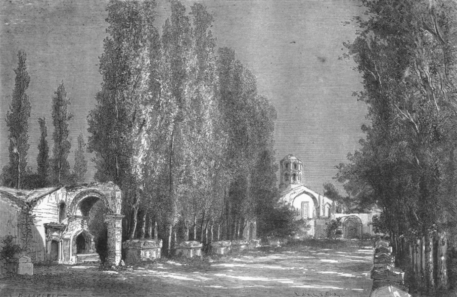

Krajobrazy Rilkego
Les Alyscamps
Was, o których nigdy nie zapomnę,
pozdrawiam, sarkofagi antyczne…
W Sonetach do Orfeusza (część pierwsza, sonet X) przywołuje Rilke wspomnienie grobów „na sławnym starym cmentarzu Alyscamps niedaleko Arles”, o którym mowa jest również w Pamiętnikach Malte Lauridsa Brigge.
Cimetière des Alyscamps, Arles, sceneria rozmyślań Maltego, uwieczniona na rysunku D. Lancelota z roku 1880

Paul Gauguin „Allee des Alyscamps”, 1888

Vincent van Gogh „Alyscamps”, 1888